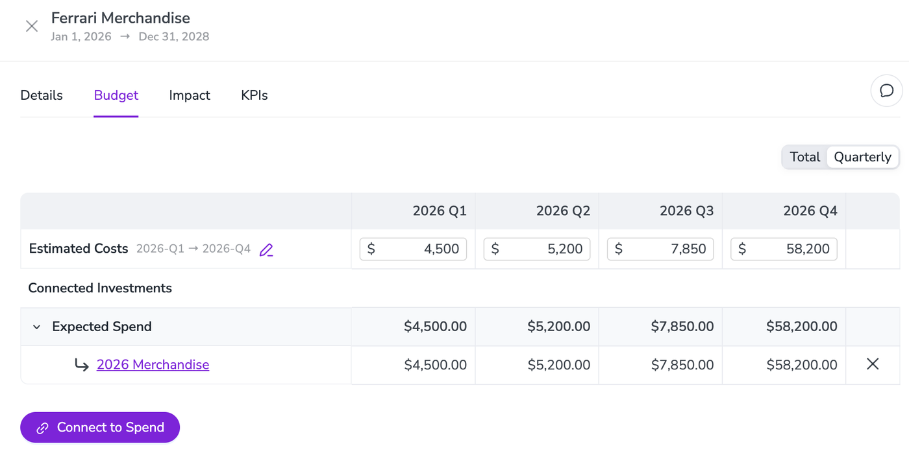
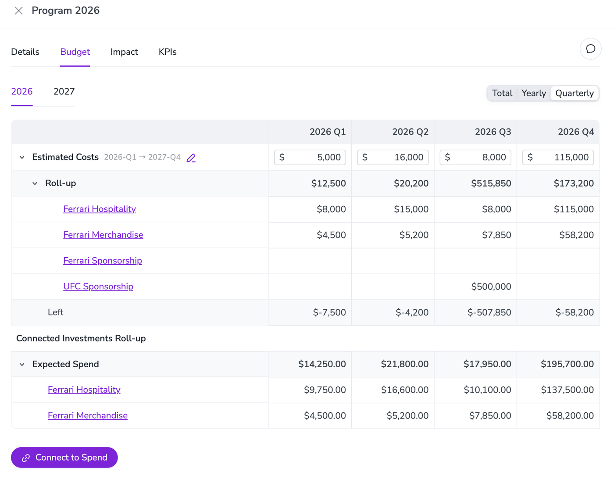

Track and analyze activity budgets
In Uptempo Campaign Management, Estimated Costs and Connect to Spend help you to plan, track, and evaluate your marketing budgets more effectively.
With Estimated Costs, you can define the expected cost of activities during the planning phase, giving you a forward-looking view of how your budget is allocated across campaigns, activities, and time periods. This helps you to forecast more accurately, identify budget constraints early, and align planned spend with your marketing objectives.
Connect to Spend links your activities to spend data from Uptempo Financial Management. Making spend data available on your activities gives you clearer insight into budget performance, which lets you easily monitor how spend is performing and reallocate budget if needed.
How activity budget tracking works
When you are planning your marketing activities, the budgets that will fund them may not yet be finalized. If you have an initial sense of what an activity is likely to cost, you can use Estimated Costs to record that estimate directly on the activity.
You can enter estimated costs at any level of your activity hierarchy. All estimated costs automatically aggregate up to the top of the activity hierarchy along hierarchy paths, so you can plan costs top-down or bottom-up, and get insight into anticipated costs at all levels.
After budgets are set, you can use Connect to Spend to connect investments to activities. When you do this, budget data from the connected investment is displayed directly on the activity, so you can easily view the activity's planned, expected, committed, and actual spend, and compare it to the cost assumptions you made during the planning phase. Estimated Costs and connected spend appear together in a single table in the Budget section of the activity's details panel.
Track estimated costs on activities
For each activity, you can enter what you expect the activity to cost during the planning phase. Estimated costs automatically roll up to ancestor activities, so you can both record and view estimated costs at any level of the hierarchy.
After you enter the estimated cost for an activity, you can reference it again at any time.
Add a cost estimate to an activity
In the
 Activities section, click on the activity for which you want to add the estimated cost. The activity's details panel opens.
Activities section, click on the activity for which you want to add the estimated cost. The activity's details panel opens.In the details panel, click the Budget section to open it.
In the Budget section, find the Estimated Costs row at the top of the table.

Optional: All cost estimates have a default date range (typically, the in-market dates for the activity). The date range is shown next to the row name. To edit the date range, click
 Edit the date range, then use the date picker to select the start and end dates.
Edit the date range, then use the date picker to select the start and end dates.Enter estimated costs. You will see either a single input field, or multiple input fields, depending on whether your Uptempo instance is configured for total or quarterly estimated cost amounts:
If your Uptempo instance is set up to use the Total Estimated Costs format, you specify a single amount for the full date range.
Enter the estimated cost amount into the single total input field in the Estimated Costs row.
If your Uptempo instance is set up to use the Quarterly Estimated Costs format, you specify separate amounts for each quarter in the date range:
Enter estimated cost amounts into each of the quarterly input fields in the Estimated Costs row.
If the date range covers more than one year, a tab for each year is shown at the top of the table. Click a year to switch to the input fields for that year:

Click anywhere outside an estimated cost input field to finish editing. The cost estimate amount you entered is saved automatically.

View an activity's estimated costs
In the
Activities section, click on the activity for which you want to view the estimated cost. The activity's details panel opens.In the details panel, click the Budget section to open it.
In the Budget section, the Estimated Costs row displays the estimated cost set on the current activity for each period.
If the activity has child activities where estimated costs have been entered, click the
 Expand icon next to Estimated Costs to display more information:
Expand icon next to Estimated Costs to display more information:Roll-up: Lists the child activities and their estimated costs for each period, along with an aggregate total.
Left: Displays the estimated cost of the current activity minus the roll-up amount. A negative amount means that the estimated costs of the child activities exceed the estimated cost of the current activity.


Track spend on activities
After an activity has been connected to an investment, you can view associated spend data from Uptempo Financial Management in the Budget section of the activity's details panel at any time.
View an activity's spend data
In the
Activities section, click on the activity for which you want to view spend data. The activity's details panel opens.In the details panel, click the Budget section to open it.
If the activity is connected to an investment, or if any of its descendant activities are connected to investments, the Connected Investments section of the table lists a row for each spend data category. Each row displays the aggregate spend of that type from all investments connected to the activity and all descendant activities, for each period.
Click the
Expand icon next to a spend data category to view the connected investments. Each connected investment is listed with the amount of that investment allocated to the activity in each period.
To remove a connection, click  Disconnect at the end of the investment's row. For details, see Connect investments to track activity funding.
Disconnect at the end of the investment's row. For details, see Connect investments to track activity funding.
Compare Estimated Costs and connected spend
Estimated Costs and connected spend appear together in a single table in the Budget section of an activity's details panel. You can compare your planned costs against connected spend in each period without switching between two tables.
One table for both: The Estimated Costs row is at the top of the table, followed by the Connected Investments section. Both use the same period columns, so you can read the variance for each period across the table.
One control for the year: On an activity that spans more than one year, click a year tab at the top of the table to change the year. Estimated Costs and connected spend update together.

Break down activity spend data by time period
By default, the table displays quarterly amounts. Because timing is often a critical consideration with budget spend, you can change how granular the amounts are. This gives you a more detailed view of exactly when spend is happening, which can help you to spot potential issues (such as overspending in a particular quarter).
Use the Total, Yearly, and Quarterly options at the top right of the table to change the time period. The selection applies to Estimated Costs and connected spend together.
Single year: On activities connected to investments from one budget year, the Total and Quarterly options are available. Select Quarterly to see amounts broken down by quarter:
Multiple years: On activities connected to investments from more than one budget year, a Yearly option is also available. With Yearly and Quarterly, use the year tabs to choose the year for which you want to view data:
You can view breakdowns by time period at any level of the activity hierarchy. On higher-level activities, the Roll-up row under Estimated Costs lists the estimated costs of child activities, and the Connected Investments Roll-up section lists amounts aggregated from investments connected to lower-level activities. You can also connect investments directly to a higher-level activity, and they are listed the same way as on any other activity:
Understand roll-up and remaining amounts
Both activities and investments exist within multi-level hierarchies, and you can enter estimated costs and make connections at multiple levels. The Roll-up and Left rows are designed to make it easy to understand how amounts at lower levels of the activity hierarchy relate to the level you're currently viewing.
For example, the parent activity Program 2026 has an estimated cost of $5,000 in 2026 Q1, and two child activities have estimated costs in that quarter:
Ferrari Hospitality has an estimated cost of $8,000.
Ferrari Merchandise has an estimated cost of $4,500.
The details panel of Program 2026 shows the following amounts for 2026 Q1:
Estimated Costs: $5,000, the amount entered on Program 2026 itself.
Roll-up: $12,500, the sum of the estimated costs of the child activities ($8,000 + $4,500).
Left: $-7,500, calculated by subtracting the $12,500 Roll-up amount from the $5,000 Estimated Costs amount.
The negative Left amount tells you that the estimated costs of the child activities exceed the estimated cost of the parent activity, so you can adjust either amount.
The Connected Investments Roll-up section works the same way for spend: it adds up the amounts from investments connected to the child activities. In this example, $9,750 from Ferrari Hospitality and $4,500 from Ferrari Merchandise add up to $14,250 of Expected Spend in 2026 Q1.